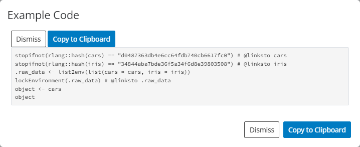
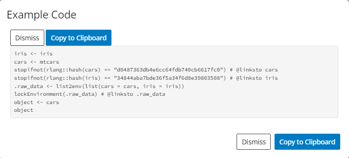

Including Data in teal Applications
NEST CoreDev
Source:vignettes/including-data-in-teal-applications.Rmd
including-data-in-teal-applications.RmdData in teal Applications
The teal framework readily accepts general,
non-relational data. Modules defined in the
teal.modules.general package are designed to work well with
that kind of data. Relational data is handled just as well and the
mechanism of passing data to applications is virtually the same. This
includes clinical data that conforms to the ADaM standard.
We are working on making the framework extendable so that support for
other data structures can be added with relative ease. Currently some
support is offered for the MultiAssayExperiment class.
All applications use the teal_data class as a data
container. teal_data objects are passed to
init to build the application, where they are modified by
the filter panel (if applicable) and passed on to modules. Thus, the
first step of building a teal app is creating a
teal_data object.
General data
A teal_data object is created by calling the
teal_data function and passing data objects as
name:value pairs.
Note that iris and cars have been added to
the datanames property of data (see datanames property).
This is sufficient to run a teal app.
# build app
app <- init(
data = data,
modules = example_module()
)
# run app
shinyApp(app$ui, app$server)Reproducible data
A teal_data object stores data in a separate
environment. Therefore, modifying the stored datasets requires that
processing code be evaluated in that environment. Following that logic,
one can create an empty teal_data object and populate it by
evaluating code. This can be done using the eval_code
function or, more conveniently, using the within
function.
# create empty object
data_empty <- teal_data()
# run code in the object
data_populated_1 <- eval_code(data_empty, code = "iris <- iris
cars <- mtcars")
# alternative
data_populated_2 <- within(data_empty, {
iris <- iris
cars <- mtcars
})The key difference between eval_code and
within is that the former accepts code as character vector
or language objects (calls and expressions), while within
accepts only inline code. See ?qenv for more
details.
Note that in the first example data was created by
passing data objects, so the code that was used to create the data
objects is unknown and therefore the process cannot be reproduced.
Inspecting code the in the app created above reveals a note that the
preprocessing code is absent.

The necessary code can be supplied to the code argument
of the teal_data function.
data_with_code <- teal_data(
iris = iris, cars = mtcars,
code = "iris <- iris
cars <- mtcars"
)
Keep in mind this code is not executed in the
teal_data’s environment, so it may not reproduce the
environment. Such an object is considered unverified (see verified property).
If reproducibility is required, we recommend creating an empty
teal_data object and then evaluating code.
Creating data in-app
The one departure from passing a teal_data object to
init is when the data does not exist in the environment
where the app is run, e.g. when it has to be pulled from a
remote source. In those cases a teal_data_module must be
used. See this vignette for a
detailed description.
Clinical data
Currently teal supports two specialized data
formats.
ADaM data
The ADaM data model, defined in CDISC standards,
specifies relationships between the subject-level parent dataset and
observation-level child datasets. The cdisc_data function
takes advantage of that fact to automatically set default joining keys
(see join_keys property). In the
example below, two standard ADaM datasets
(ADSL and ADTTE) are passed to
cdisc_data.
# create cdisc_data
data_cdisc <- cdisc_data(ADSL = teal.data::rADSL, ADTTE = teal.data::rADSL)
datanames(data_cdisc)
#> [1] "ADSL" "ADTTE"
join_keys(data_cdisc)
#> A join_keys object containing foreign keys between 2 datasets:
#> ADSL: [STUDYID, USUBJID]
#> <-- ADTTE: [STUDYID, USUBJID]
#> ADTTE: [STUDYID, USUBJID, PARAMCD]
#> --> ADSL: [STUDYID, USUBJID]
app <- init(
data = data_cdisc,
modules = example_module()
)
shinyApp(app$ui, app$server)
MultiAssayExperiment data
The MultiAssayExperiment package offers a data structure
for representing and analyzing multi-omics experiments that involve
multi-modal, high-dimensionality data, such as DNA mutations, protein or
RNA abundance, chromatin occupancy, etc., in the same biological
specimens.
The MultiAssayExperiment class is described in detail here.
MultiAssayExperiment objects (MAEs) are placed in
teal_data just like normal objects.
library(MultiAssayExperiment)
utils::data(miniACC)
data_mae <- teal_data(MAE = miniACC)
app <- init(
data = data_mae,
modules = example_module()
)
shinyApp(app$ui, app$server)Due to the unique structure of a MAE, teal requires
special considerations when building teal modules.
Therefore, we cannot guarantee that all modules will work properly with
MAEs. The package teal.modules.hermes
has been developed specifically with MAE in mind and will be more
reliable.
The filter panel supports MAEs out of the box.
teal_data properties
datanames
The datanames property lists the objects stored in the
teal_data environment that constitute datasets of interest.
Objects passed to teal_data become automatically listed in
the datanames property of the resulting object. Objects
created in teal_data by evaluating code need not be data
objects of interest and as such they are not automatically added to
datanames. For convenience, an empty datanames
property is considered to mean “all objects in the container”.
datanames can be read or modified with the
datanames function.
data_with_objects <- teal_data(iris = iris, cars = mtcars)
data_with_code <- teal_data() %>%
within({
iris <- iris
cars <- mtcars
not_a_dataset <- "data source credits"
})
datanames(data_with_objects)
#> [1] "iris" "cars"
datanames(data_with_code)
#> character(0)
datanames(data_with_code) <- c("iris", "cars")
datanames(data_with_code)
#> [1] "iris" "cars"The datanames property serves as a communication bridge
between the data container and modules in a teal
application. In teal all modules are called with a
datanames argument that determines which of the variables
in the teal_data object they are to access. Only variables
enumerated in the datanames property are eligible for use
in modules.
Note that specifying datanames in teal_data
is optional; if the property is empty, all objects are considered
eligible. Likewise, the datanames argument in the module
call defaults to "all", which means that module will
attempt to access all eligible variables in the teal_data
object.
For a detailed explanation of datanames, see this
teal.data vignette.
join_keys
Using relational data requires specifying joining keys for each pair
of datasets. Primary keys are unique row identifiers in individual
datasets and thus should be specified for each dataset. Foreign keys
describe mapping of variables between datasets. Joining keys are stored
in the join_keys property, which can be set when creating a
teal_data object, using the join_keys
argument, or using the join_keys function.
ds1 <- data.frame(
id = seq(1, 10),
group = rep(c("A", "B"), each = 5)
)
ds2 <- data.frame(
group = c("A", "B"),
condition = c("condition1", "condition2")
)
keys <- join_keys(
join_key("DS1", keys = "id"),
join_key("DS2", keys = "group"),
join_key("DS1", "DS2", keys = c("group" = "group"))
)
data_relational1 <- teal_data(DS1 = ds1, DS2 = ds2, join_keys = keys)
data_relational2 <- teal_data(DS1 = ds1, DS2 = ds2)
join_keys(data_relational2) <- keysFor a detailed explanation of join keys, see this
teal.data vignette.
verified
teal_data allows for tracking code from data creation
through data filtering through data analysis so that the whole process
can be reproduced. The verified property designates whether
or not reproducibility has been confirmed. teal_data
objects that are created empty and only modified by evaluating code
within them are considered verified by default. Those created with data
objects alone or with data objects and code are not verified by default,
but can become verified by running the verify function.
data_with_code
#> ✅︎ verified teal_data object
#> <environment: 0x559163313058> [L]
#> Parent: <environment: package:teal>
#> Bindings:
#> • not_a_dataset: <chr> [L]
#> • cars: <df[,11]> [L]
#> • iris: <df[,5]> [L]
data_with_objects_and_code <- teal_data(iris = iris, cars = mtcars, code = expression(iris <- iris, cars <- mtcars))
data_with_objects_and_code
#> ✖ unverified teal_data object
#> <environment: 0x55916304c8f8> [L]
#> Parent: <environment: package:teal>
#> Bindings:
#> • cars: <df[,11]> [L]
#> • iris: <df[,5]> [L]
data_with_objects_and_code_ver <- verify(data_with_objects_and_code)
data_with_objects_and_code_ver
#> ✅︎ verified teal_data object
#> <environment: 0x55916304c8f8> [L]
#> Parent: <environment: package:teal>
#> Bindings:
#> • cars: <df[,11]> [L]
#> • iris: <df[,5]> [L]For a detailed explanation of verification, see this
teal.data vignette.
Further reading
For a complete guide to the teal_data class, please
refer to the teal.data
package.